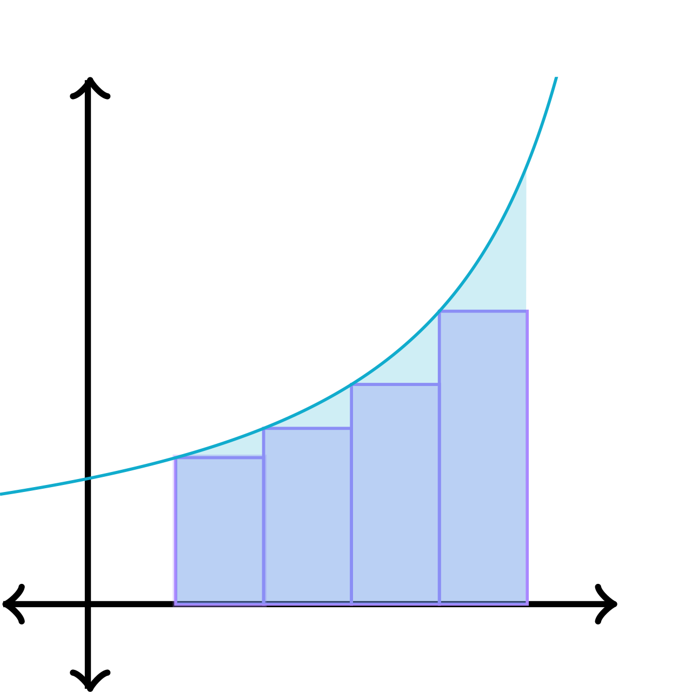

Quizá la barra de navegación en la parte superior del sitio ya lo hizo notar, pero en este sitio veremos 4 temas:
Notación Sigma

Integrales
Suma de Riemann

Antiderivadas

El cálculo integral, encuadrado en el cálculo infinitesimal, es una rama de las matemáticas en el proceso de integración o antiderivación, es muy común en la ingeniería y en la matemática en general y se utiliza principalmente para el cálculo de áreas y volúmenes de regiones y sólidos de revolución. Fue usado por primera vez por científicos como Arquímedes, René Descartes, Isaac Newton, Gottfried Leibniz e Isaac Barrow.
Los trabajos de este último y los aportes de Newton generaron el teorema fundamental del cálculo integral, que propone que la derivación y la integración son procesos inversos. La integral definida de una función representa el área limitada por la gráfica de la función, con signo positivo cuando la función toma valores positivos y negativo cuando toma valores negativos.
Realizamos esta página con dos propósitos, evidentemente el primero es para poder presentarlo como proyecto final para la materia de cálculo integral, pero el segundo propósito es para poder ofrecerlo como una herramienta a los futuros alumnos que cursen ya sea esta misma materia, o que hayan escogido la misma especialidad que nosotros, programación. Con este sitio además de aprender sobre integración y notación, también podrán tomar notas en cuanto a diseño y procesos de aplicaciones Web.
Quizá la barra de navegación en la parte superior del sitio ya lo hizo notar, pero en este sitio veremos 4 temas:
Urias Vizcarra Zahid Josue
Página de Notación Sigma y conceptualización del diseño de la sítio
Martínez Figueroa Mónica Margarita
Docente encargado de asignar proyecto
Castillo Herrera Luis Gabriel
Página Inicio y Antiderivada, acomodo general de la página
Corrales Vega Nicolás Alonso
Página de Integrales
Cota Pineda Marin
Página de Integrales
Carrasco Mendoza Hiram Alejandro
Página de Suma de Riemann
CENTRO DE BACHILLERATO TECNOLÓGICO, industrial y de servicios No.37
Grupo:5AMP
Materia: Cálculo Integral